Protéger 10 500 hectares de reforestation contre les feux, avec de l'imagerie satellite gratuite.
Détection pixel-based sur images Sentinel-2, classification XGBoost, pipeline de production autonome qui tourne au rythme des passages satellite. Stage de recherche de 6 mois à l'UM6P (Rabat), pour CANOPY Energy, sur le site de Fagnako à Madagascar.
CANOPY Energy replante 10 500 hectares de Pongamia pinnata à Fagnako, dans le sud-est de Madagascar. L'espèce est plantée pour ses graines oléagineuses, sur un terrain de savane où le brûlis reste une pratique agricole courante.
Les départs de feu sont récurrents et détruisent des mois de plantation. Le problème n'est pas de les éteindre, les équipes sont sur place, mais de savoir où et quand ça a brûlé. Sans cette information, les constats se font à pied, des semaines plus tard, sur une zone vaste et mal desservie.
Détecter les feux dès leur apparition, à partir d'imagerie satellite open source uniquement, pas de capteur au sol, pas de drone, pas de budget d'acquisition.
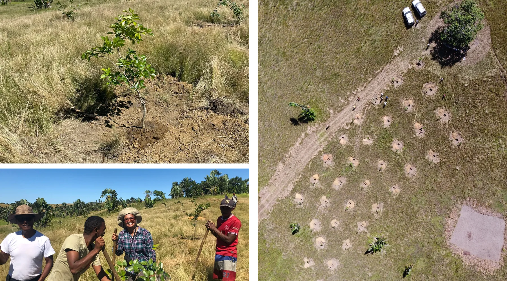
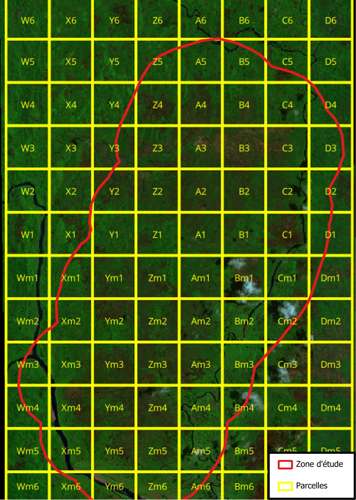
La zone est découpée en 96 parcelles régulières, dont 64 intersectent réellement le périmètre CANOPY. C'est l'unité de travail du projet de bout en bout : unité de recherche d'images, unité d'inférence, unité de rapport. Une alerte nomme une parcelle, pas une coordonnée.
Mon premier réflexe a été celui de la littérature : un réseau convolutif classique sur des patchs d'image, ou un modèle de fondation en télédétection type Prithvi (NASA / IBM). Ces approches lisent une texture spatiale, et supposent donc une image propre.
À Fagnako, en saison humide, environ 4 images sur 5 sont partiellement couvertes. Et même après masquage des nuages, l'image reste trouée : la convolution passe sur des zones vides et invente de la texture là où il n'y a plus de donnée. C'est ce constat qui m'a fait abandonner l'approche patch au profit du pixel.
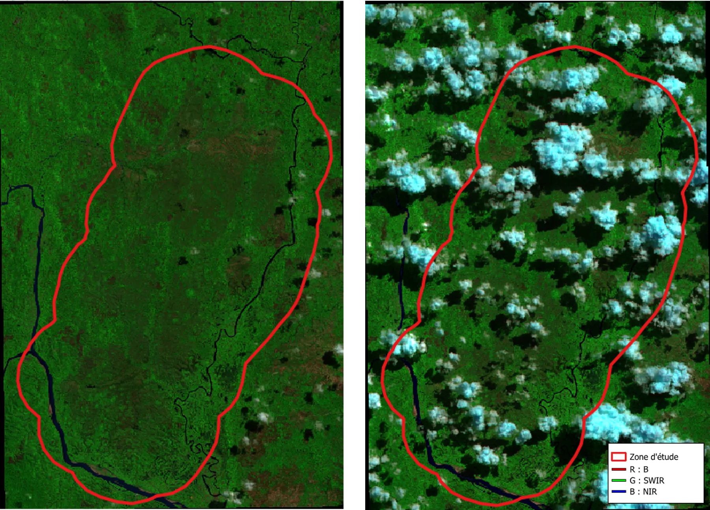
Attendre une image propre, c'est attendre des semaines. Le délai de détection devient le vrai facteur limitant, pas la précision du classifieur.
Entraînés sur des conditions idéales, coûteux à faire tourner, et non explicables pour l'équipe terrain. J'ai préféré une chaîne légère, auditable, qui accepte l'image telle qu'elle arrive.
La base fournie par CANOPY recense 42 feux. On a confirmé plus tard que d'autres feux réels n'y figuraient pas. Donnée de terrain, imparfaite, pas un jeu académique propre.
Chaque passage Sentinel-2 arrive découpé en tuiles, avec ses nuages et ses trous. Quatre étapes le ramènent à un raster unique, orthorectifié, aligné sur l'emprise des parcelles.
Requête sur la collection, filtre d'emprise et de date.
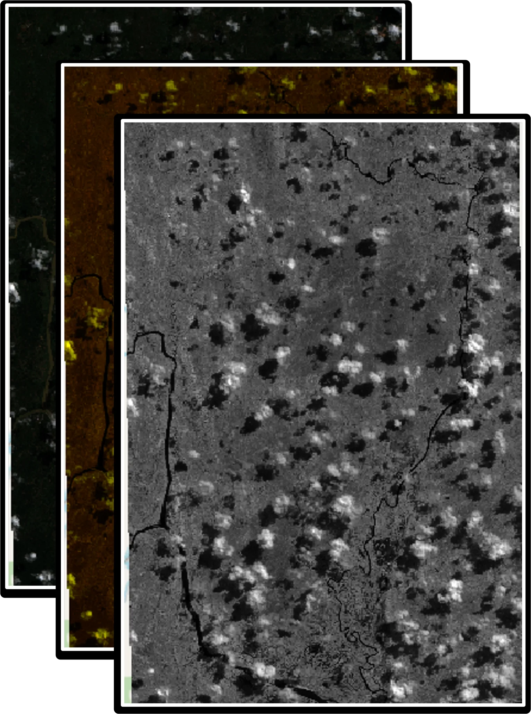
6 bandes brutes par tuile, rééchantillonnées à 10 m.
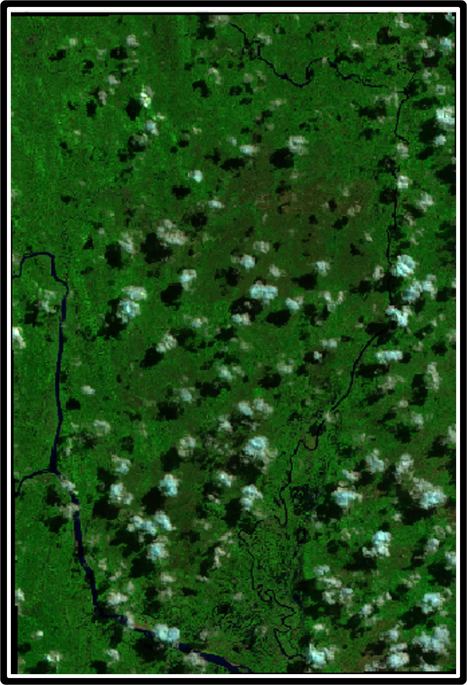
Mosaïque unique, reprojetée, superposable d'une date à l'autre au pixel près.
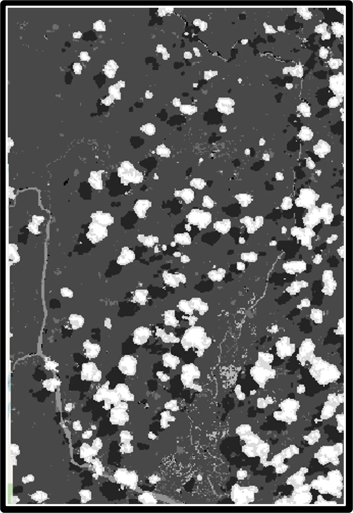
Nuages, ombres et eau étiquetés par le satellite : sert de masque de validité.
Le raster est aplati : une ligne par pixel valide, 6 réflectances par ligne.
Pas de réseau convolutif, pas de patch. L'unité de décision est le pixel : on le regarde avant, on le regarde après, et on décrit le changement. Un feu se lit dans une signature très nette, chute du proche infrarouge, montée du SWIR.
On classe un pixel, mais on le décrit avec son voisinage immédiat et avec son propre passé : la même position à la date précédente. Le modèle ne voit donc pas une image, il voit une transition, et c'est cette transition qui porte le signal du feu.
Les 6 bandes, aux deux dates.
Combinaisons de bandes conçues pour la végétation et la surface brûlée.
Moyenne et écart-type locaux : un feu est une tache, pas un pixel isolé.
Chaque grandeur est aussi donnée en écart entre les deux dates, le signal le plus discriminant.
Trois familles : végétation (NDVI), surface brûlée dans le visible et le proche infrarouge (BAI, BAIM, NBR, NBR2), et signature de cendre dans le SWIR (MIRBI, NBRSWIR, CSI). Aucun n'est suffisant seul, c'est leur combinaison, et surtout leur variation entre deux dates, qui sépare les classes.
C'est ici que se joue la construction de la base d'entraînement. Pour chaque feu daté de la base CANOPY, on cherche le couple qui maximise le nombre de pixels avant / après exploitables, c'est-à-dire valides aux deux dates, tout en gardant une fenêtre temporelle raisonnable : trop longue, et d'autres changements viennent se mêler au feu ; trop courte, et il n'y a pas d'image propre.
Sur l'exemple ci-dessous, six passages séparent les deux images retenues : tous écartés pour cause de nuages sur la zone de feu. Les deux images conservées sont celles qui récupèrent la totalité des pixels de la zone, au prix d'un écart d'environ 30 jours.
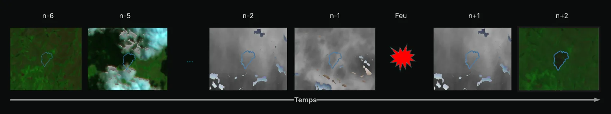
Deux couples réels du jeu d'entraînement, même emprise, même écart de dates. Tirez la poignée pour passer de la date avant à la date après.
Ce que le modèle doit apprendre, c'est la transition non-feu → feu : une végétation intacte qui devient une surface brûlée. Une zone déjà brûlée sur les deux dates, ou une zone brûlée qui reverdit (feu → non-feu), ne doit produire aucune détection. Sans cette contrainte de sens, le modèle apprendrait simplement à reconnaître « deux images différentes ».
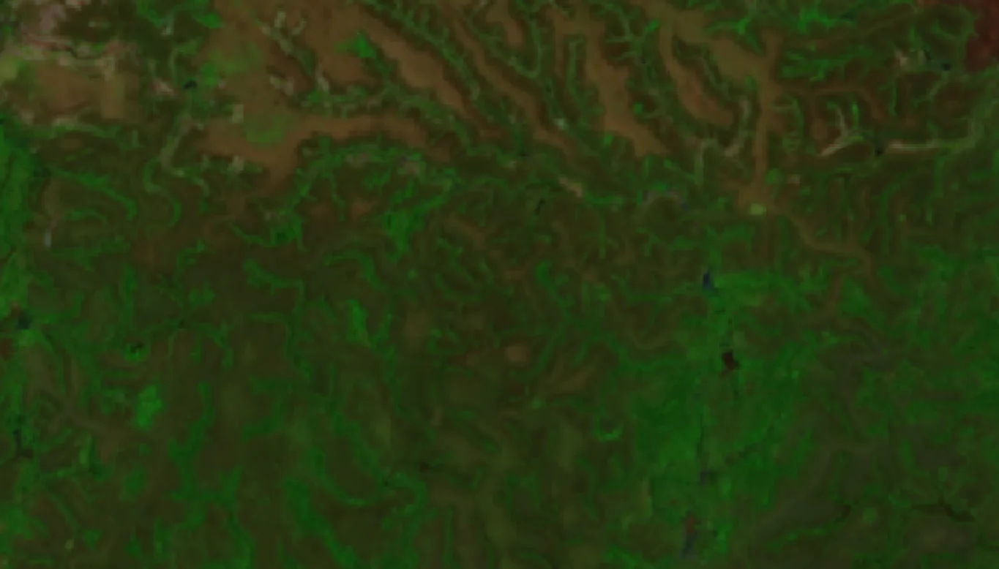
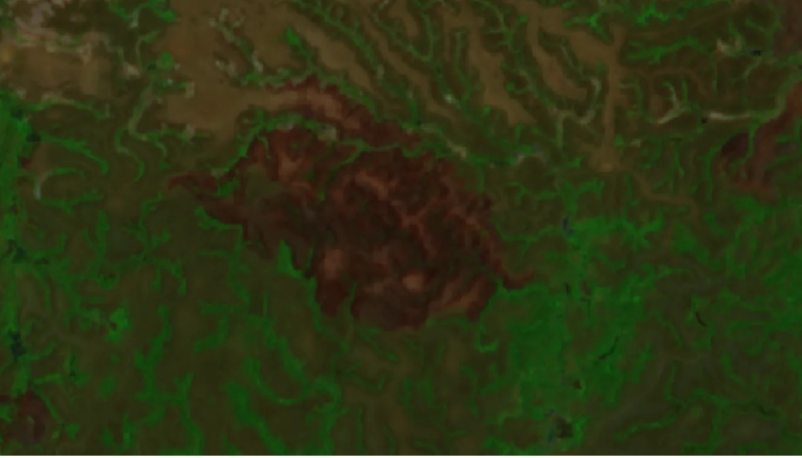
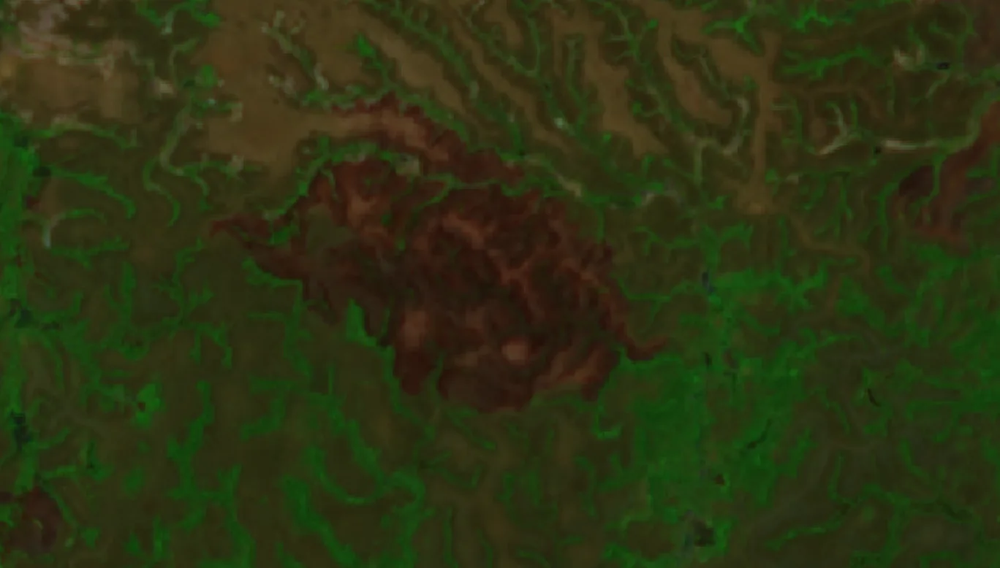
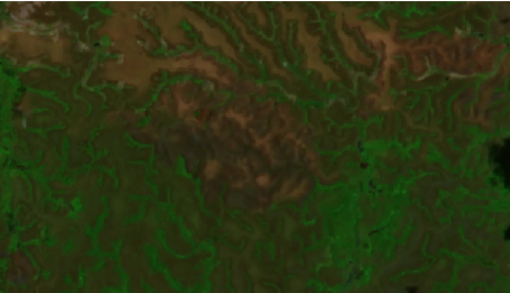
{{ p.note }}
Une fois le couple avant / après retenu pour une parcelle, les deux SCL sont agrégés en un masque unique, l'union des nuages, ombres et eau des deux dates, appliqué aux deux images. Un pixel n'est conservé que s'il est valide aux deux dates : c'est la condition pour que la différence entre les dates ait un sens.
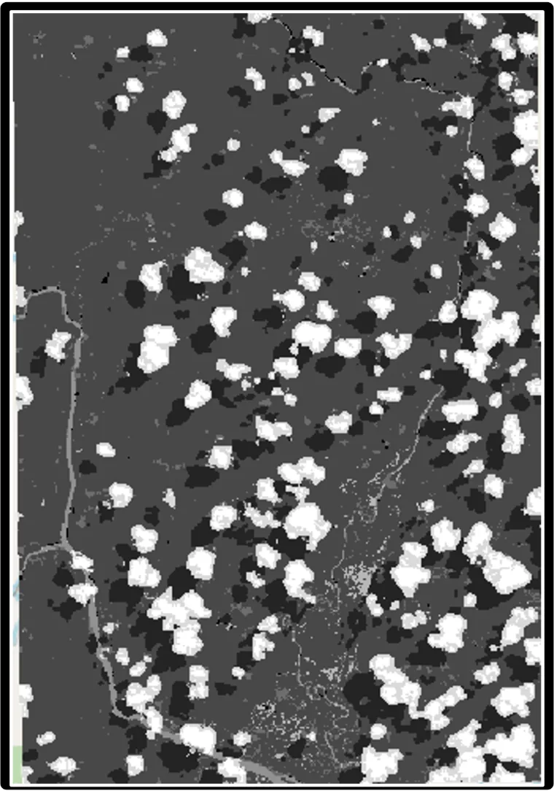
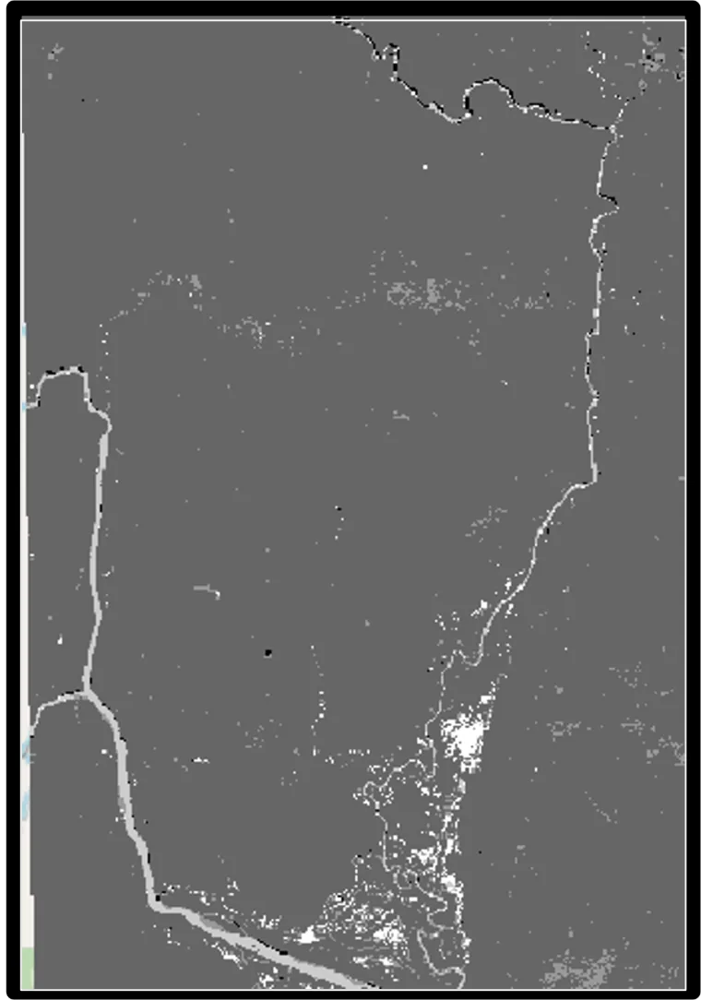
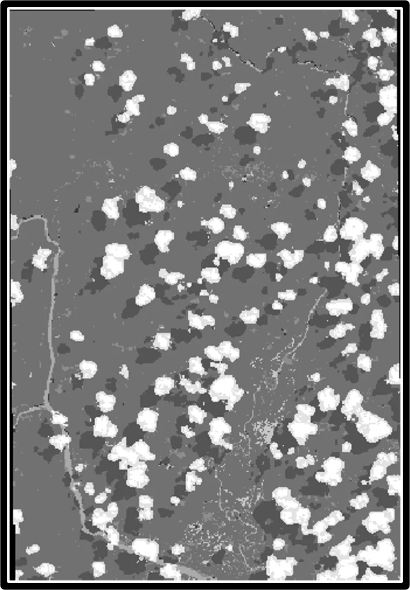
Un seul masque pour le couple. Tout pixel invalide à l'une des deux dates devient invalide aux deux.
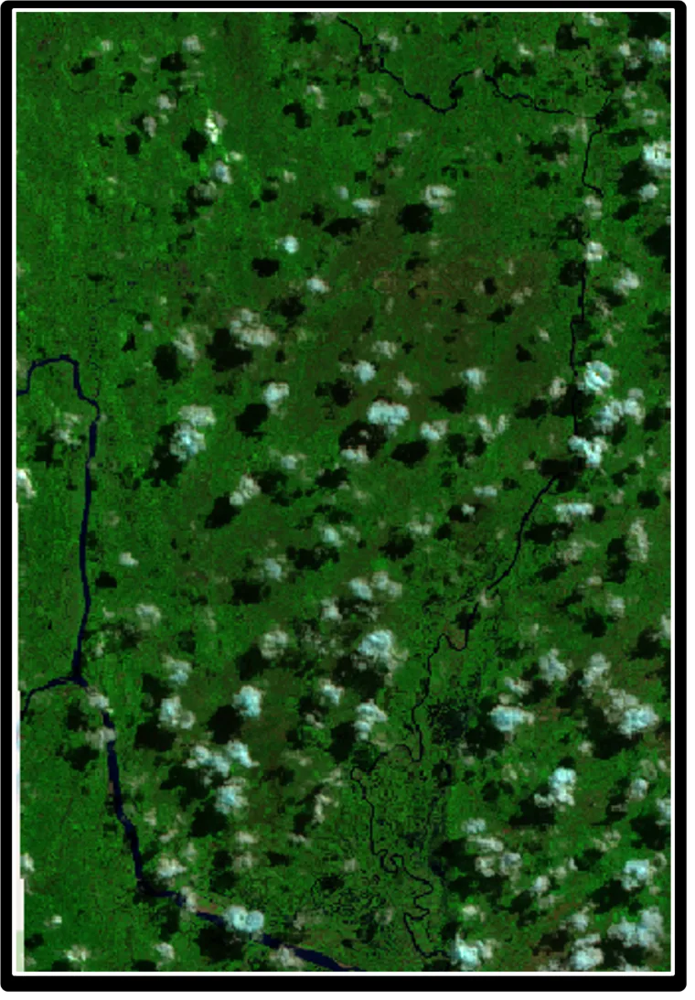
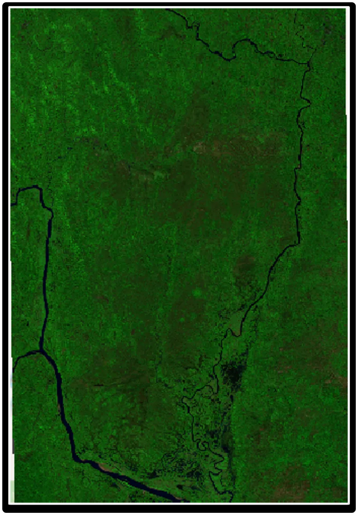
Les réflectances brutes des six bandes, aux deux dates, superposables au pixel près.
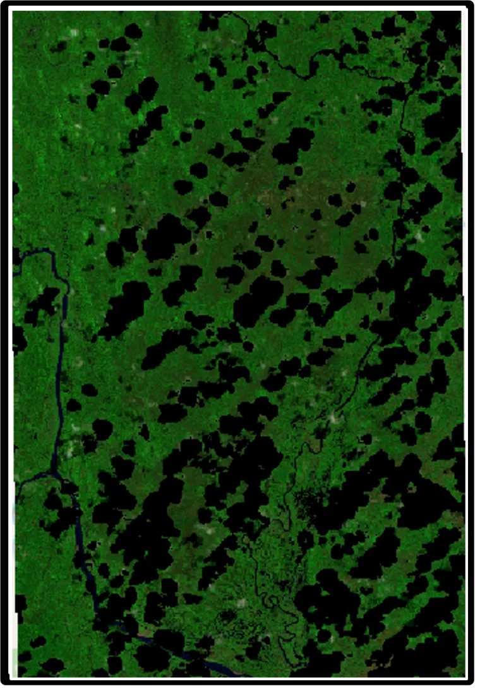
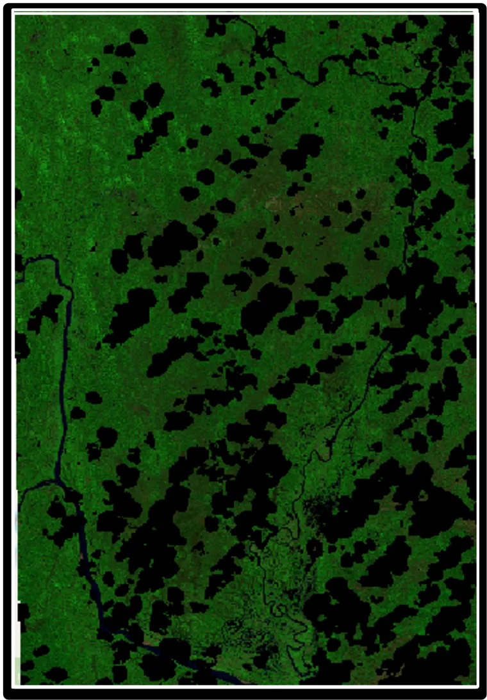
Trous identiques aux deux dates : ce qui reste est comparable pixel à pixel. Chaque pixel valide devient une ligne, enrichie de ses indices, de ses statistiques de voisinage et de ses écarts entre les deux dates.
Deux effets opposés. Un seuil sévère ne garde que des images propres, mais force à attendre le bon passage. Un seuil permissif détecte vite, sur des images dégradées, et perd des pixels sous les nuages. J'ai balayé le seuil de 5 à 50 % pour trouver le point d'équilibre.
Le maximum de pixels feu tombe à 25 % : 46 167 pixels récupérés pour 35 jours de délai moyen. Au-delà, on n'ajoute plus de données, les images sont trop dégradées pour que les pixels survivent au masquage. C'est ce seuil qui est câblé dans le pipeline de production.
C'est contre-intuitif : un seuil sévère devrait donner des images plus propres, donc plus de pixels utilisables. On s'attendait à voir les deux courbes décroître ensemble. Ce n'est pas le cas, en dessous d'environ 15 %, l'archive satellite ne contient tout simplement aucune image AVANT qui respecte la condition. Le couple ne peut pas être formé, et le feu entier disparaît du jeu de données : on ne perd pas quelques pixels sous les nuages, on perd des feux complets.
Sur la plupart des features, les deux classes ne se séparent pas proprement. Une partie du chevauchement est physique, un champ récolté ressemble à une surface brûlée, mais une partie vient de la base d'annotation : les feux que CANOPY n'a pas répertoriés sont étiquetés « non-feu » alors qu'ils sont du feu.
C'est la limite principale du jeu de données, et une source de faux négatifs structurels. Je l'ai documentée plutôt que de la corriger à la main : nettoyer les labels aurait rendu les métriques flatteuses et le modèle non reproductible.
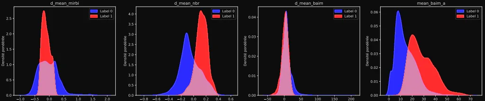
92 features par pixel, dont beaucoup redondantes : on élimine d'abord tout ce qui est prédictible par les autres (R² < 0,64), puis on croise deux critères, la stabilité de l'importance en Random Forest, et une élimination récursive (RFE) menée séparément avec Random Forest et SVM. Ne restent que les variables qui survivent aux deux.
SUFFIXES · _A DATE AVANT · _B DATE APRÈS · D_ DIFFÉRENCE ENTRE LES DEUX · MEAN_ MOYENNE SUR LE VOISINAGE 3×3
Avec des pixels voisins qui se ressemblent énormément, un découpage aléatoire donne des scores magnifiques et faux. J'ai donc écrit mon propre schéma de split : une forme de leave-one-out à la fois temporelle et spatiale. Chaque fold met de côté un groupe de feux qui ne partagent ni les dates ni la zone géographique du reste de l'entraînement. Un groupe peut contenir plusieurs feux, à plusieurs dates : ce qui est interdit, c'est qu'un même feu se retrouve des deux côtés du split. 26 couples avec apparition de feu, 14 sans, 6 folds.
Un groupe rassemble plusieurs feux, éventuellement observés à des dates différentes, mais aucun feu n'est jamais réparti entre deux groupes : tous les pixels d'un même feu restent solidaires. Tant qu'un groupe est en validation, aucun de ses pixels, ni aucun pixel de la même date, ni aucun pixel du même lieu, n'apparaît dans l'entraînement. C'est la seule façon d'estimer ce que le modèle fera sur un feu qu'il n'a jamais vu, à une date qu'il n'a jamais vue.
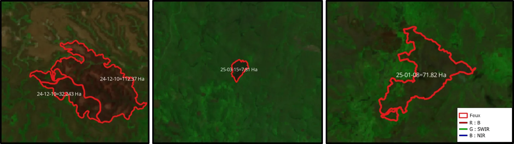
On sous-échantillonne la classe non-feu en répartissant le tirage sur toutes les scènes, pour ne pas se retrouver avec un jeu d'entraînement dominé par deux ou trois paysages.
Interpoler des pixels feu synthétiques entre des feux situés dans des paysages différents produit des signatures spectrales qui n'existent pas. Gain nul en validation, risque d'artefacts en production.
Le poids w₁ de la classe feu est relevé pour que chaque feu manqué coûte davantage qu'une fausse alerte.
Une fausse alerte coûte une vérification sur le terrain. Un feu manqué coûte des hectares de plantation. L'asymétrie est nette, elle a été validée avec CANOPY, et elle a orienté tous les arbitrages : pondération de la loss, seuil de décision, seuil de clustering. Le F1-score sert de garde-fou pour que la précision ne s'effondre pas.
Rapport de classification sur les folds de validation. L'accuracy globale est de 98,05 %, un chiffre sans intérêt ici : prédire « non-feu » partout en donnerait déjà 98,8 %. Seule la ligne « feu » compte.
NORMALISÉE PAR LIGNE · PIXELS VALIDES AUX DEUX DATES
Tous les chiffres ci-dessus sont des métriques au niveau du pixel. Or l'objet utile pour le terrain n'est pas le pixel, c'est le feu. Après traitement morphologique et clustering, chaque feu du jeu de test a été retrouvé, au moins un pixel feu détecté à l'intérieur de son emprise. Un rappel pixel de 0,64 se lit donc très différemment selon l'échelle : le modèle rate des bords de cicatrice, pas des feux.
Une part des faux positifs correspond à des feux réels absents de la base CANOPY : le modèle les détecte, le jeu de labels les compte comme des erreurs. La performance réelle est donc probablement meilleure que ce que ces chiffres indiquent. C'est une limite du jeu de données, pas une faiblesse que je masque, et c'est exactement ce que la boucle de retour terrain corrige, feu validé après feu validé.
Nous utilisons déjà ton travail pour suivre les feux a posteriori, ce qui complète parfaitement l'éventail de solutions que nous déployons en amont à Fagnako (sensibilisation, formation et appui local).
pipeline.py se déclenche à chaque nouvelle image Sentinel-2 disponible, soit tous les cinq à six jours en pratique, et enchaîne détection de disponibilité, téléchargement, prétraitement, inférence et écriture des sorties. Aucune intervention humaine dans la boucle nominale.
L'inférence tourne parcelle par parcelle, sur les 64 parcelles suivies : pour chacune, le pipeline cherche son propre couple avant / après, puisque la couverture nuageuse n'est pas la même d'un bout à l'autre de la zone.
{{ o.desc }}
{{ s.d }}
Chaque polygone rouge est un cluster de pixels feu. Les contours bleus délimitent les zones exploitables du run, c'est-à-dire ce que le masque nuage a laissé passer. Un clic expose la fiche du feu : identifiant, parcelle, score de confiance, version du modèle, surface et dates du couple utilisé.
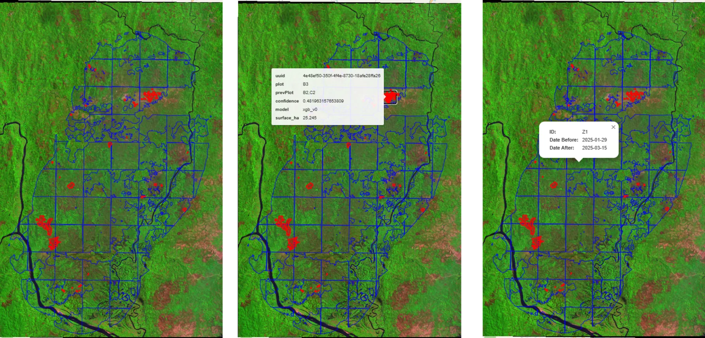
Chaque détection confirmée sur le terrain rejoint la base annotée. Une commande relance l'entraînement complet sur le jeu élargi, c'est le mécanisme qui fait remonter la précision, puisque les faux positifs d'aujourd'hui sont les vrais positifs annotés de demain.
Quand des clusters dépassent le seuil, un email part automatiquement aux équipes : parcelles touchées, surfaces estimées, scores de confiance et dates du couple d'images. Assez pour décider d'un déplacement sans ouvrir un SIG.
Le pipeline tourne au rythme de Sentinel-2, environ tous les cinq à six jours. Ce bloc reprend l'export du dernier run : les zones scopes effectivement analysées et les polygones fires détectés.
Le 1ᵉʳ septembre 2026 illustre bien la contrainte nuageuse : avant comme après, la couverture était dense sur la zone, si bien que seules 37 des 64 parcelles suivies ont pu être analysées, les autres écartées faute de pixels valides aux deux dates. Sur ces 37 parcelles, deux clusters voisins ressortent sur la parcelle A3, pour 4,4 ha cumulés. La confiance du modèle y reste modérée (≈ 0,53) : à confirmer sur le terrain, pas à prendre pour argent comptant.
{{ detail.note }}
BLOC MIS À JOUR MANUELLEMENT DEPUIS L'EXPORT DU DERNIER RUN · RÉCUPÉRATION DYNAMIQUE À VENIR
Les deux composites réellement téléchargés par le pipeline pour ce couple, recadrés sur les deux clusters détectés. Le nuage en haut à gauche et les zones noires (masquées) font partie du même passage : c'est ce qui limite la confiance du modèle sur ce run.
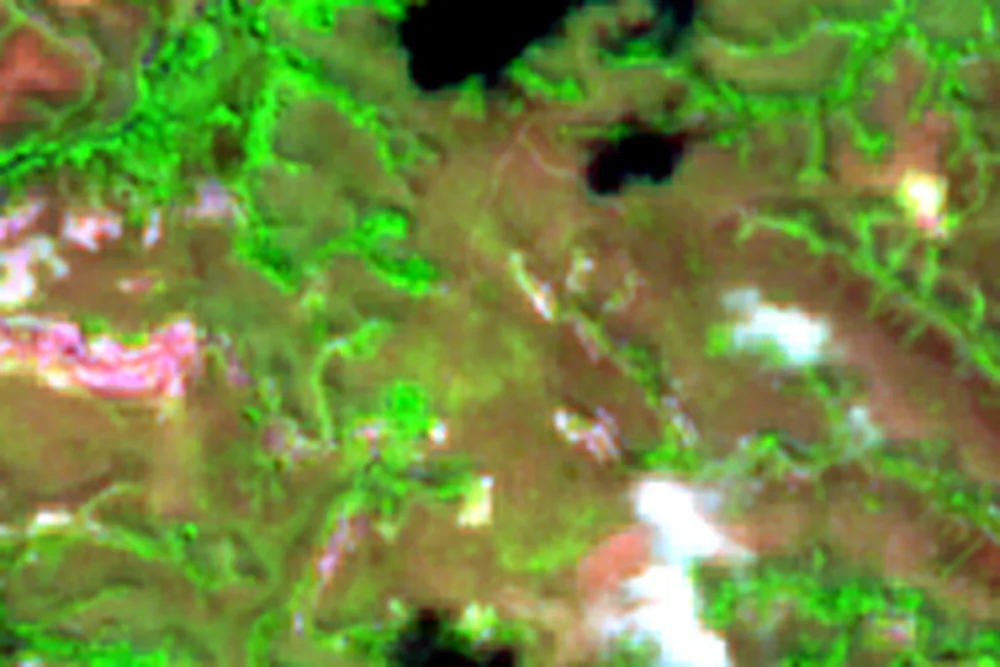
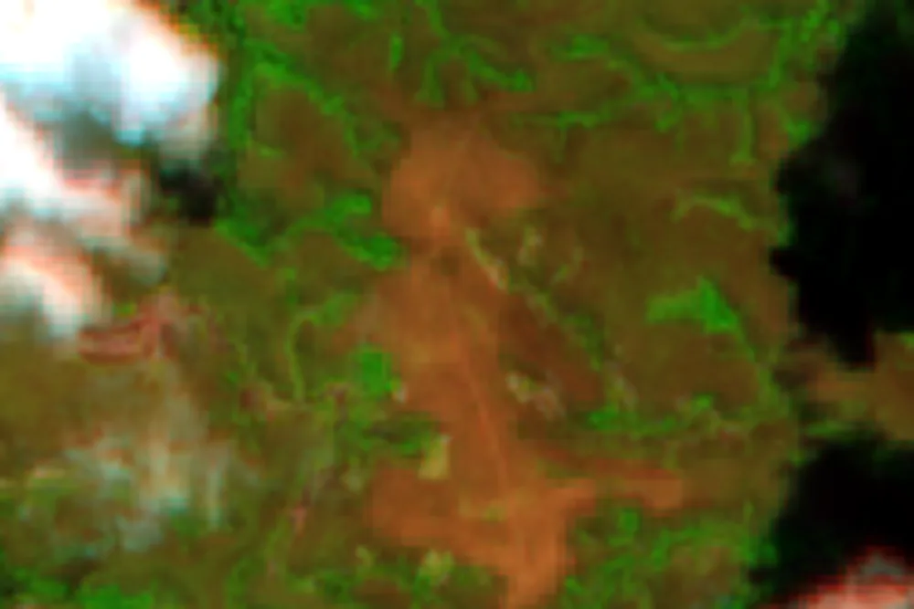
L'outil est utilisé par les équipes CANOPY Energy pour le suivi a posteriori des feux à Fagnako, en complément de leurs actions de prévention sur le terrain, sensibilisation, formation et appui aux communautés locales. Il ne remplace pas ce travail : il leur dit où regarder.
Ce que je retiens du stage : le verrou n'était ni l'architecture ni la métrique, mais la qualité de la donnée disponible, et le fait d'assumer publiquement ses trous plutôt que de les lisser.
Yannis Huguenin · Ingénieur IA, ENSTA Bretagne 2026 · AI Engineer @ PwC France